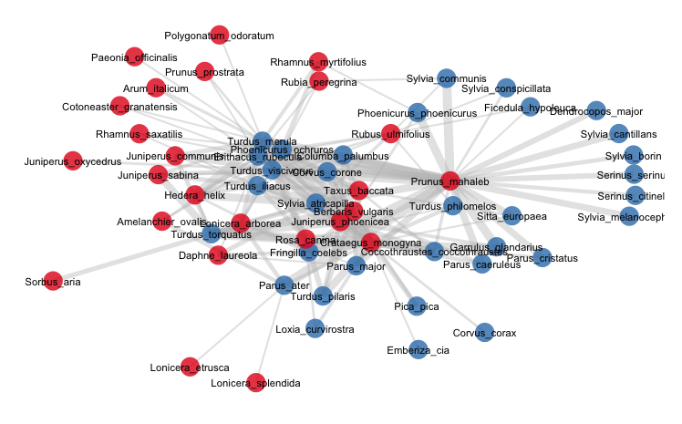
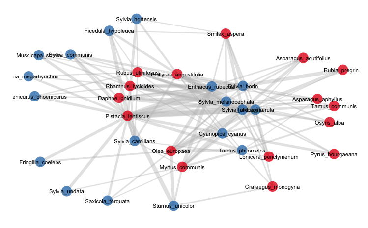
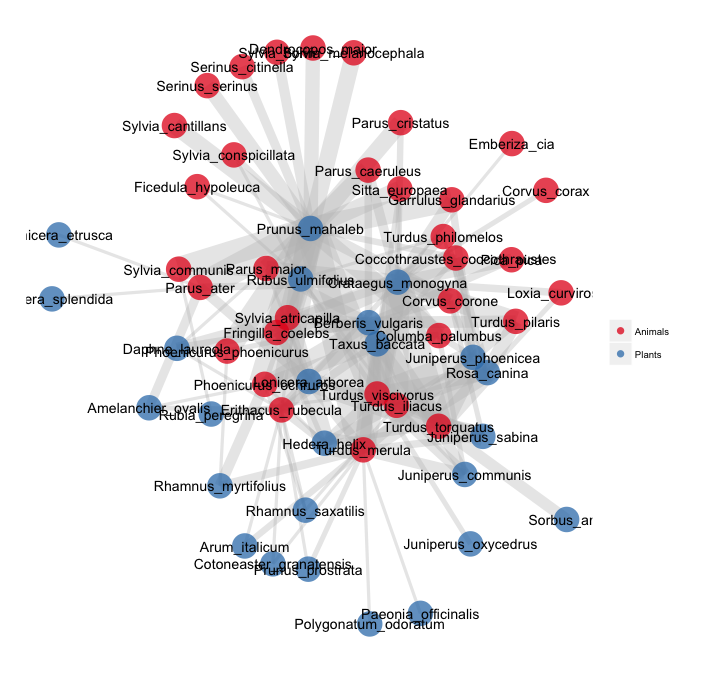

Plotting bipartite networks with energy-minimization algorithms
This is a series of R script files aimed to plot bipartite networks. Bipartite networks are a special type of network where nodes are of two distinct types or sets, so that connections (links) only exist among nodes of the different sets.
As in other types of network, bipartite strucures can be binary (only the presence/absence of the links is mapped) or quantitative (weighted), where the links can have variable importance or weight.
To plot, we start with an adjacency or incidence matrix. I'm using matrices that illustrate ecological interactions among species, such as the mutualisttic interactions of animal pollinators and plant flowers. The two sets (modes) of these bipartite netwroks are animals (pollinators) ans plants species.
From any adjacency matrix we can get a network object or an igraph object for plotting and analysis.
Required packages
Here I plot bipartite networks from their adjacency matrices, i.e., the two-mode networks.
Initializing bipartite webs for library network
# # Read data matrices. # Read a network # Creating the objects. Example input from the clipboard. # mymat <- read.delim("data.txt", row.names=1) # # Where data.txt has a weighted adjacency matrix, e.g.,: # Aa Ab Ac Ba Bb Bc Bd Ca Cb Cc Da P1 139 112 9 73 4 14 20 14 5 2 1 P2 184 26 6 19 31 21 17 11 7 5 0 P3 281 74 33 36 18 29 5 9 5 3 0 P4 87 40 38 21 13 12 9 1 1 0 0 P5 100 93 27 12 8 11 32 0 0 0 0 P6 51 25 13 17 9 1 0 0 0 0 0 P7 42 26 16 0 2 0 0 0 0 0 0 P8 31 18 14 15 12 9 7 1 0 0 0 P9 46 12 6 0 3 0 0 0 0 0 0 P10 136 0 0 12 0 2 2 0 0 0 0 P11 130 8 0 5 0 0 0 0 0 0 0 # # Use this to copy from the clipboard, after select/copy the above block. # mymat <- read.table(pipe("pbpaste"), header=T, sep= "\t",row.names=1)
The adjacency matrix is read as tab-separated file with header names, and the first column is taken as the row names. These are two of my datasets of well-sampled plant-frugivore interaction networks from S Spain, read in the usual way.
# # The Nava de las Correhuelas dataset. # nch <- read.table("./data/NCH_quant_bmatrix.txt", header = T, sep = "\t", row.names = 1, dec = ",", na.strings = "NA") # # The Hato Raton dataset. # hr <- read.table("./data/HR_quant_bmatrix.txt", header = T, sep = "\t", row.names = 1, dec = ".", na.strings = "NA")
Here I use my function bip_init to initialize the bipartite networks.
Functions to plot network graphs
bip_binplot
Simple function to plot a binary bipartite network in network.
bip_qtplot
Function to plot a weighted bipartite network in network object.
bip_gplot
Function to plot a weighted bipartite network in igraph.
bip_ggplot
This is just a prototype of function. I'm using it as raw code for now. You assign the matrix and network object at the start (see below).
In addition, my function vectorize is needed in the section using ggplot2.
Using ggplot2
Draft code for plotting a bipartite network in ggplot2
The code for ggplot2 is in the file bip_ggplot2.R. It is not a function
yet. I'm using the gplot.layout.fruchtermanreingold layout, but just tweak the code to get a Kamada-Kawai, for example. We just source this file after assigning the input adjacency matrix and
the input graph:
require(network) require(ggplot2) require(sna) require(ergm) # # Assign the matrix and the network objects here. mymat is a matrix with # column names and row names. net is a network object. This is for the # Nava de las Correhuelas network. # mymat <- nch net <- nch.net # Now we source the bip_ggplot2.R file source("bip_ggplot2.R")

# # We repeat for the Hato Raton network. # mymat <- hr net <- hr.net source("bip_ggplot2.R")

Using François Briatte's ggnet function
# # Plotting bipartite networks from adjacency matrix of two-mode network. # Using ggplot2. Code from Francois Briatte, using his fucntion ggnet. # DATE: 15Jul2013. # require(downloader)
## Loading required package: downloader# # PJ example. Based on a gist by F Briatte to just feed the network data # from its adjacency matrix to ggnet # link = "https://raw.github.com/pedroj/bipartite_plots/master/data/NCH_quant_bmatrix.txt" file = "data/NCH_quant_bmatrix.txt" if (!file.exists(file)) download(link, file, mode = "wb") M <- read.table(file, sep = "\t", dec = ",", header = TRUE, row.names = 1) # # Bipartite network initialization, starting from an adjacency # matrix. # source("functions/bip_briatte.R") source_url("https://raw.github.com/briatte/ggnet/master/ggnet.R", prompt = FALSE) # # Pass the network, edge weights and mode to ggnet. # net = bipartite.network(M, modes = c("Animals", "Plants")) ggnet(net, segment.size = edge.weights(M, 15), segment.alpha = 0.35, label = TRUE, color = "black", node.group = get.vertex.attribute(net, "mode"))
## Loading required package: grid## Loading required package: RColorBrewer
Acknowledgements
This code benifits from comments and Rcode sharing by François Briatte and Scott Chamberlain.
Best wishes, and happy computing! -- Pedro
Last Updated: Jueves, 16 Julio, 2013 00:35 AM
On line since 1989. Pedro Jordano